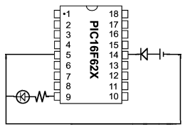
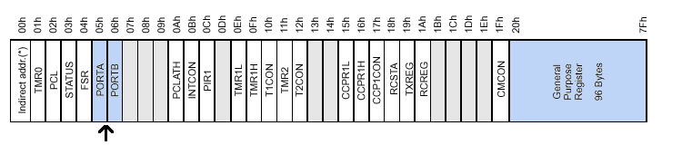
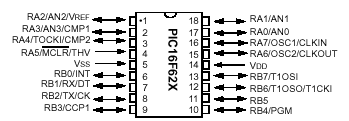

Agorobots - Wednesday plan
A more complicated circuit.
You can use a special kind of gate to blink the light on and off:

Now you can see why we wanted 5 volts instead of 6; the chip requires
a power supply of 5 volts to operate. This chip can be used
for much more than blinking lights, and you will learn how to do it!
Introduction to the PIC.
The chip you used to blink the light is a microcontroller - a
microchip that can be used to control things like lights and robots -
called the PIC16F627, or PIC for short. Here is the huge technical
datasheet for the PIC, in case you are interested in learning
about it on your own. The PIC is programmed with a kind of assembly
language, the most low-level kind of programming language there
is. Here is the program used to make the light blink:
include "robot.h"
useoutput portb,3 ; use B3 as an output
loop
bsf portb,3 ; set the output B3
delay250 ; wait 250 ms
bcf portb,3 ; clear the output B3
delay250 ; wait 250 ms
goto loop ; and repeat!
END
You can download this program from our source directory.
The memory of the PIC.
Inside the PIC, there are two types of memory: program memory,
where your program is stored, and data memory, which is used by
your program as a general purpose storage space. Some locations in
memory are special:

The blocks in this picture represent the bytes (each has eight
individual 1s and 0s called bits) of data memory. The
large highlighted location at the end of memory is your general
storage space, and the small blocks with names are bytes with special
functions. An arrow points to the most important ones for building a
robot: the input/output bytes. You can see that we used bit number
three of portb in the example program above; this is
called "port RB3". The other ports, RA0-RA7 and RB0-RB7 are arranged
on the chip as in this picture (don't worry about the extra names for
some of the port; they indicate features that we probably won't need):

Go back to the main page.